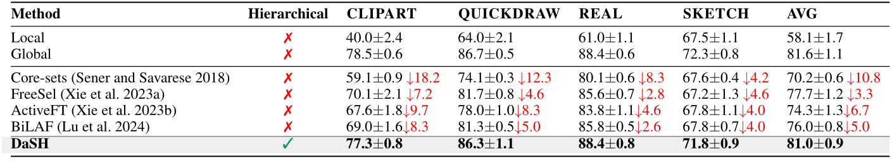
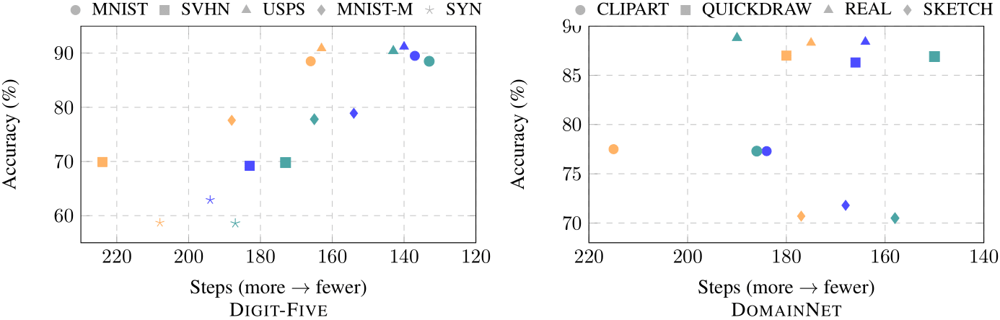

The success of modern machine learning hinges on access to high-quality training data. In many real-world scenarios, such as acquiring data from public repositories or sharing across institutions, data is naturally organized into discrete datasets that vary in relevance, quality, and utility. Selecting which repositories or institutions to search for useful datasets, and which datasets to incorporate into model training are therefore critical decisions, yet most existing methods select individual samples and treat all data as equally relevant, ignoring differences between datasets and their sources. In this work, we formalize the task of dataset selection: selecting entire datasets from a large, heterogeneous pool to improve downstream performance under resource constraints. We propose Dataset Selection via Hierarchies (DaSH), a dataset selection method that models utility at both dataset and group (e.g., collections, institutions) levels, enabling efficient generalization from limited observations. Across two public benchmarks (Digit-Five and DomainNet), DaSH outperforms state-of-the-art data selection baselines by up to 26.2% in accuracy, while requiring significantly fewer exploration steps. Ablations show DaSH is robust to low-resource settings and lack of relevant datasets, making it suitable for scalable and adaptive dataset selection in practical multi-source learning workflows.
Each dataset and its corresponding group are modeled using Gaussian distributions N(θi, σ̂i2) and N(μi, σi2) for datasets and dataset groups, respectively. The selection process involves choosing a dataset group, followed by a specific dataset within that group. Upon receiving a reward, the posterior distributions for the dataset and the dataset group are updated to N(μ′, σ′2) and N(θ′, σ̂′2) respectively. After training, dataset groups and datasets with higher posterior means are selected.
Performance comparison on Digit-Five against baselines (averaged over 5 runs). Best performance is bold. Red downward arrows (↓) indicate absolute drops in accuracy relative to the best-performing method. Across all five domains, DaSH matches the global model, achieving an average accuracy of 78.3%, which is only 0.5% below the global upper bound (78.8%) and significantly higher than the local lower bound (51.2%).
Performance comparison on DomainNet against baselines (averaged over 5 runs). Best performance is bold. Red downward arrows (↓) indicate absolute drops in accuracy relative to the best-performing method. While performance margins are narrower than in Digit-Five, DaSH still outperforms all baselines by 3.3–10.8%.
Pareto trade-offs between accuracy and selection cost. Each point is a method–domain result (Digit-Five left, DomainNet right). Marker shape encodes the domain, while color distinguishes the methods: DaSH-Flat, DaSH (mixed), and DaSH. Points toward the upper-right represent better trade-offs (higher accuracy, fewer steps). Across both benchmarks, the upper-right region is occupied by hierarchical variants, with DaSH contributing most of the frontier on Digit-Five and sharing the frontier with DaSH (mixed) on DomainNet.
@article{xzhou2025dash,
title={Hierarchical Dataset Selection for High-Quality Data Sharing},
author={Zhou, Xiaona and Zeng, Yingyan and Jin, Ran and Lourentzou, Ismini},
journal={arXiv preprint arXiv:},
year={2025}
}